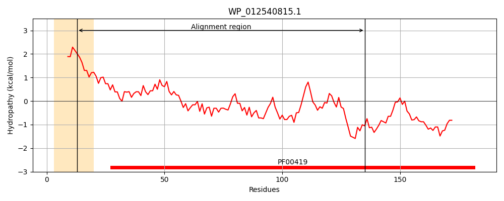
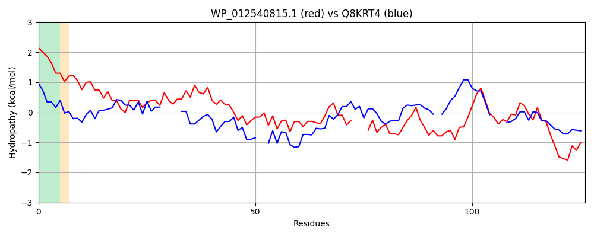

WP_012540815.1
Hit Accession: Q8KRT4
Hit TCID: 1.C.80.1.1
Hit Description: gnl|BL_ORD_ID|16465 gnl|TC-DB|Q8KRT4|1.C.80.1.1 Fimbrial major subunit OS=Xenorhabdus nematophilus GN=mrxA PE=4 SV=1
Mach Len: 126
e:0.000777
Query TMS Count : 1
Hit TMS Count: 1
TMS-Overlap Score: 0.800000
Predicted Substrates:CHEBI:24870;ion, CHEBI:25367;molecule
BLAST Alignment:
| Protein Hydropathy Plots: | |
|---|---|
|  |  |
Pairwise Alignment-Hydropathy Plot: | |
|  | |